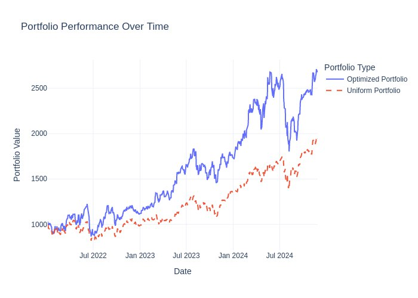

Real-World Examples of Portfolio Optimization
To showcase the capabilities of the Portfolio Optimization Bot, here are some example scenarios demonstrating how different parameters can influence investment outcomes.
Example 1: Maximizing Return
Parameters:
- Investment Day: January 1, 2022
- Optimization Metric: Maximize Return
- Portfolio Optimization Interval: Every 30 days
- Optimization History: Using past 365 days of data
- Top N Stocks: 25 highest-performing stocks
- Ticker Update Interval: Every 90 days
- Initial Capital: $1,000
- Transaction Cost Rate: 0.1% (0.001)
Results:
- Final Optimized Portfolio Value: $2,679.22
- Total Return (Optimized): 167.92%
- Final Uniform Portfolio Value: $1,945.78
- Total Return (Uniform): 94.58%
The optimized portfolio significantly outperformed the uniform portfolio, nearly doubling the total return. This demonstrates the bot's ability to identify high-return opportunities by strategically allocating funds based on historical performance and optimization algorithms.
Performance Plot:
The graph illustrates the growth of both portfolios over the investment period. The optimized portfolio (blue line) shows a steeper upward trajectory compared to the uniform portfolio (orange line).